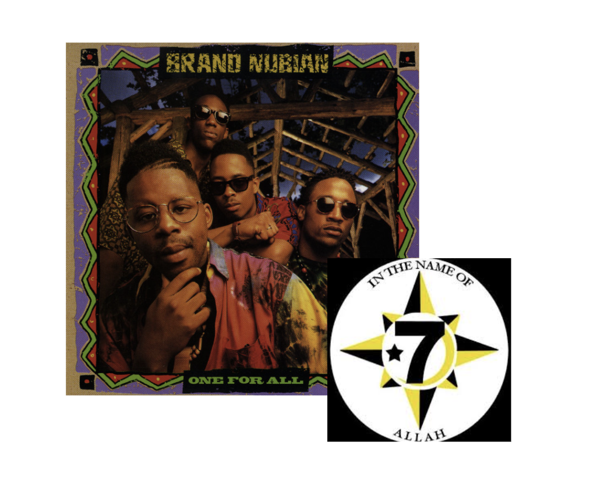
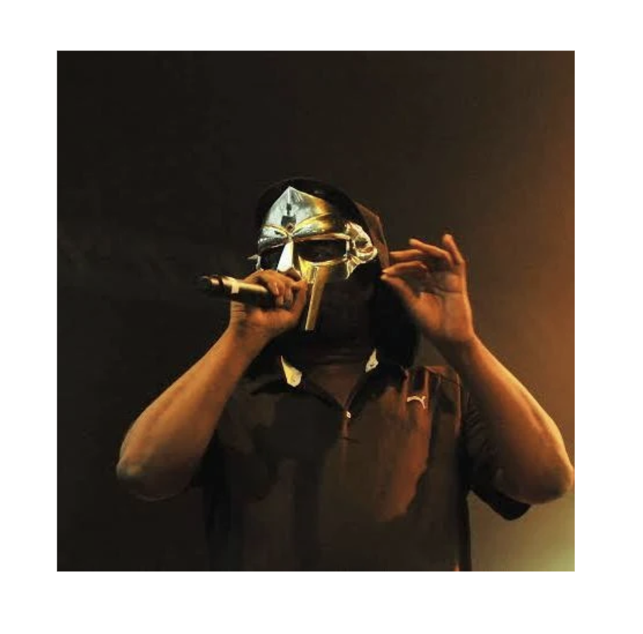
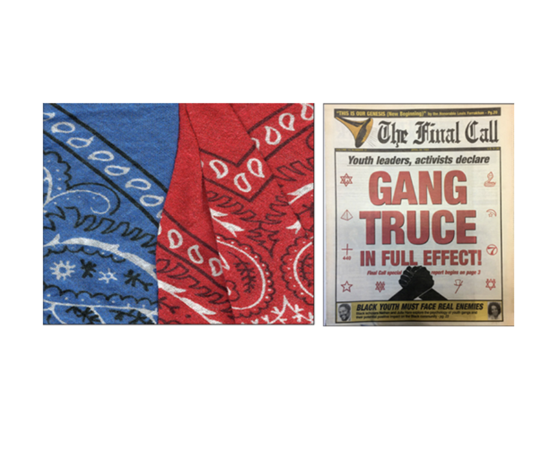
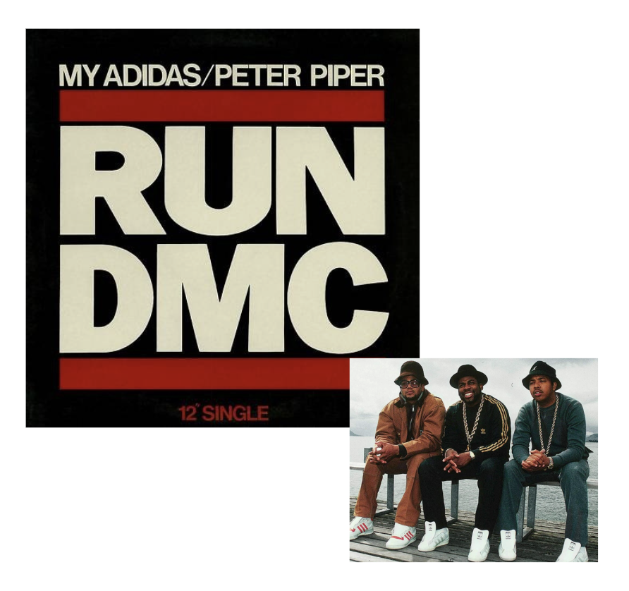
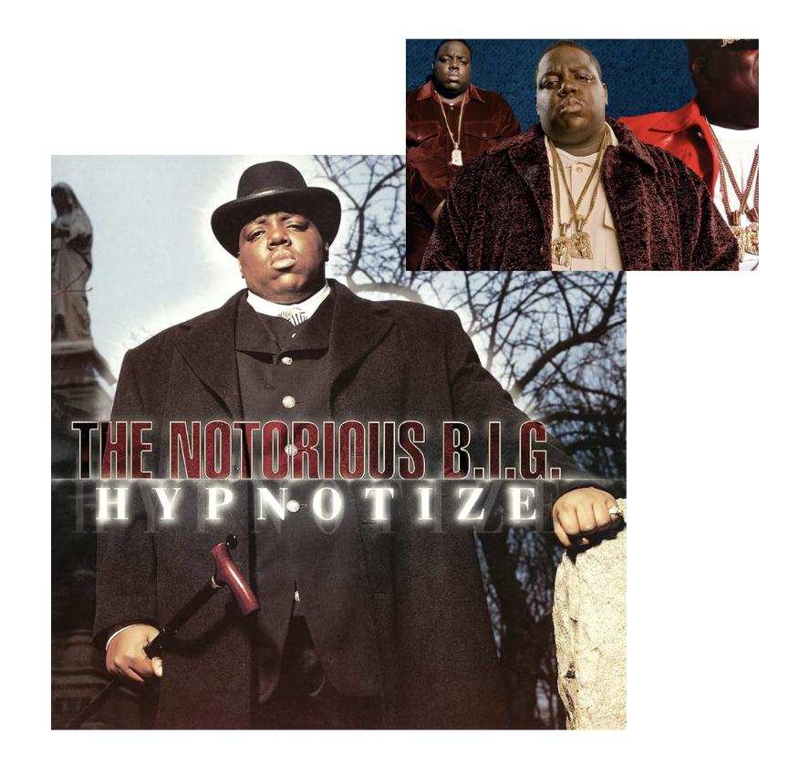
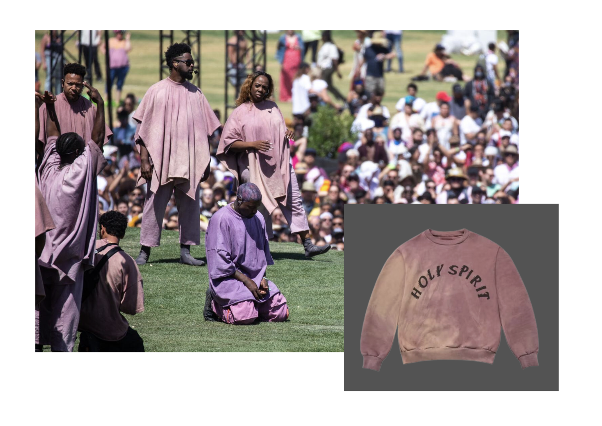
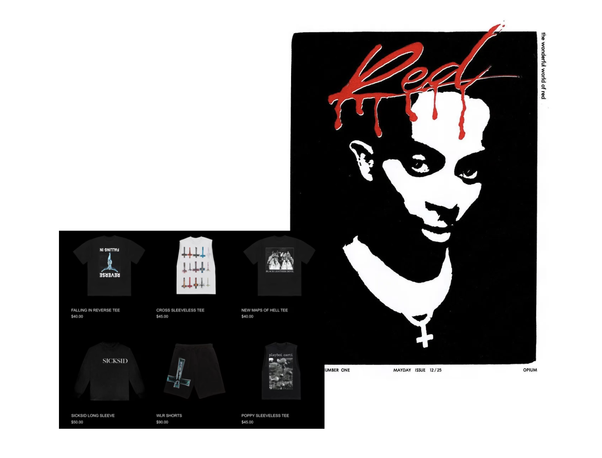
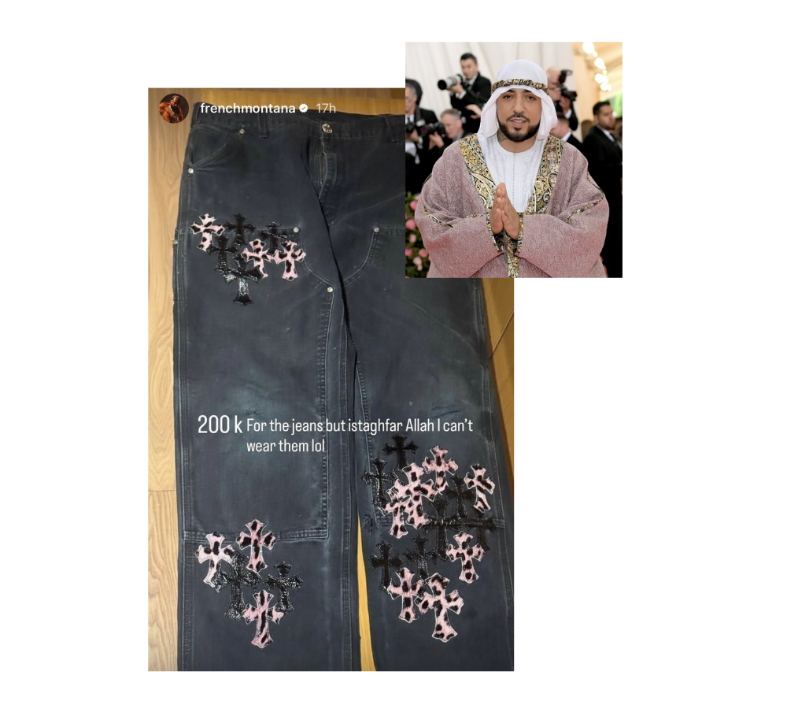

The members are seen wearing the "Universal Flag" of the Five-Percent Nation (an eight-pointed star with a seven, crescent, and star) on patches and medallions, often paired with kufis or crowns. This embodiment of the flag, in not the most obvious ways, shows that the clothing is not a trend, but a message beyond music they are trying to spread. While Brand Nubian is known for its music based on the 5 Percent Nation, the clothing in this album cover shows that the message they have goes beyond music.
While expressing belief in Allah and using Arabic terms in his music, MF Doom was known to challenge rigid, mainstream interpretations of religion. While his mask represents the death of his brother being dropped from a music label, it goes to show how fashion within Hip Hop represents ceremonial attributes like that, which can make up an artist’s brand. The mask allowed for him to focus on his narrative rather than his own life, allowing for total creative freedom.


In the 1992 Watts Truce, rival gangs in Los Angeles, specifically the Bloods and the Crips, negotiated a peace treaty following years of systemic violence and just days before the 1992 L.A. Uprising. During the truce, the act of tying a blue bandana and a red bandana together became a visual shorthand for the end of hostilities. By knotting the clothes together, the gangs were stripped of their role as markers of division. In Watts Truce, a Truce Party is videographed with DJs advocating peace amidst music playing in the background, and the symbolism of members representing their colors together shows that fashion goes beyond the role of an aesthetic marker to transform tools of division into sacred symbols of community.
The necklaces worn in the music video shows large, hand-painted leather medallions in the shape of the African continent, often featuring Pan-African colors (red, black, and green). The medallion functions as a totem. Religion could be defined in the video as protecting and validating the identity of Queen Latifah. By wearing the continent, she defines "the sacred" as her ancestry. While secular, it is also a refusal of a secular.
He often wears clothing featuring the faces of icons. By wearing their images, he isn't just following a trend, he is also showing a form of worship. The Game frequently references his "Jesus Piece," which represents his medallion. This specific piece of jewelry acts as a votive offering. It is a heavy, physical weight that represents both his material success and his spiritual protection.

"My Adidas" is a track off Run-D.M.C.'s 1986 album Raising Hell, in which the group dedicates an entire song to their Adidas Superstar sneakers, notably before any formal endorsement deal existed between the group and the brand. At a Madison Square Garden performance that same year, the group instructed 40,000 fans to hold their Adidas in the air, transforming a consumer product into the centerpiece of a collective ritual. “My Adidas” establishes hip hop's foundational logic of commodity worship, demonstrating how the same mechanisms that produce religious meaning–including repetition, communal performance, and collective affirmation– were applied to a clothing item, setting the stage for the sacralization of consumer goods in hip hop fashion.
"Hypnotize" was the first single released by The Notorious B.I.G. for his 1997 album Life After Death, in which he references wearing a “Jesus piece,” or a diamond-encrusted pendant of the face of Jesus Christ. The pendant, worn openly as a marker of wealth and status, represents a sacred symbol functioning simultaneously as a devotional object and a luxury commodity. Emerging from the prevalence of religious iconography in the fashion choices of Black and Latino communities from which hip hop emerged, the Jesus piece went on to assume a popularity in hip hop fashion beyond its religious meaning, adopted by Christian and non-Christian artists alike.


On Easter Sunday of 2019, Kanye West held a Sunday Service performance on a hillside at the Coachella Music Festival, featuring a 100-person gospel choir dressed in custom Yeezy apparel. A limited edition Yeezy merchandise collection dropped alongside the event, featuring crewnecks reading "Holy Spirit," "Trust God" t-shirts, "Jesus Walks" socks, and choir ponchos. Kanye’s performance and merch collectively blurred the line between religious performance and commercial branding, with his outward Christian faith granting authenticity to what simultaneously functioned as a large-scale product launch.
Whole Lotta Red is Playboi Carti's second studio album; released on Christmas Day in 2020, it was accompanied by a merchandise drop featuring inverted cross motifs, gothic typography, and text including "Black Leather Devil", all of which are consistent with Carti's dark and demonic aesthetic. The deliberate Christmas Day release coupled with clothing containing imagery often associated with sacrelige positioned the album as a provocation against Christian faith. Rather than destroying religious meaning, however, Carti's commercialization of anti-sacred imagery transforms it, highlighting how meaning is not inherent in sacred symbols but rather agreed upon by dominant cultural consensus.


In April 2026, Muslim rapper French Montana posted an Instagram Story showing a $200,000 pair of Chrome Hearts jeans covered in black and pink cross patches, captioned "200k for the jeans but istaghfar Allah I can't wear them lol." Through an Arabic phrase asking God for forgiveness, French Montana suggests that he had purchased the jeans without registering their Christian iconography as religiously significant. This illustrates a frequent endpoint of fashion's commercialization of sacred symbols: religious meaning can be buried so deeply beneath hip hop’s fascination with luxury that it only resurfaces when it comes into direct conflict with personal faith.